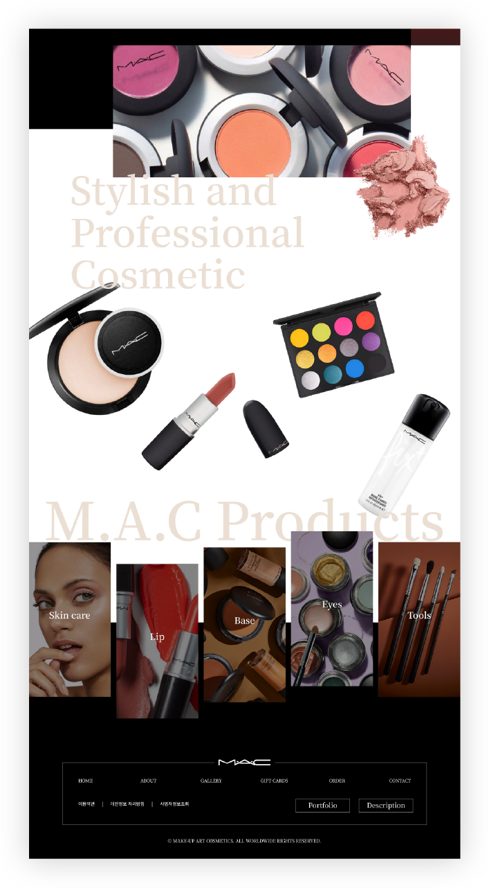
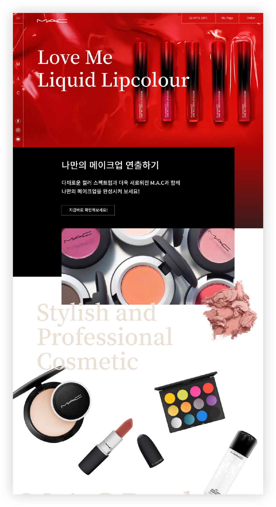
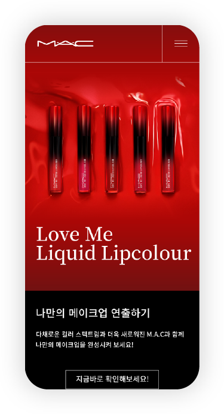
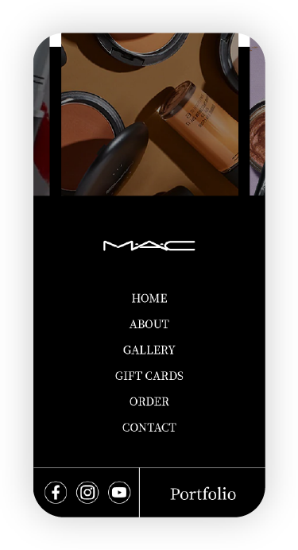

01 overview
M.A.C 웹사이트 리디자인
- 프로젝트 설명:화장품 브랜드 M.A.C의 웹 / 모바일 사이트 리디자인
- 프로젝트 제작 기간:2021.04.01 ~ 2021.04.05
- 프로젝트 유형:반응형 웹 사이트 디자인 & 구축
- 프로젝트 참여도:개인 프로젝트 100%
02 problem
제품 위주의 웹페이지
브랜드의 아이덴티티가 잘 보이지 않는 제품 위주의 웹페이지이다.
한 눈에 보이지 않는 상품
제품별 카테고리가 불분명하여 사용자가 파악하기 힘든 구조이다.
03 publishing *메인페이지 제작
- 
- 
- 
- 
- 반응형 구현PC - 1920X1080px (chrome 브라우저 최적화) / Mobile - 375X812px 에 최적화
- 웹폰트CDN을 이용한 웹폰트로 서버 응답 시간 향상
- jQueryjQuery와 플러그인을 이용한 다양한 움직임이 있는 웹페이지 구현 / 외부문서로 작성
- CSSCSS를 이용한 전반적인 디자인과 동일한 꾸밈값 적용 / 외부문서로 작성
* HTML5 , CSS3 를 사용하여 사용자 시선의 접근성과 웹표준을 준수하며 제작하였습니다
04 HTML markup point
HTML 재구현 시 필수적으로 웹 표준 및 접근성을 준수하였으며, 모바일로 변경하여도 무리없게 볼 수 있도록 반응형으로 작업하였습니다.
- # 웹 표준 준수
- # 웹 접근성 준수
- # 반응형 웹페이지
05 design concept
- simple심플,간단한
- interest재미,흥미,움직임
- luxury세련된,고급진
브랜드 특성에 맞춰 고급스럽고 심플하면서 재미요소를 더한 웹페이지를 제작합니다.
project goal
기존 웹사이트보다 브랜드의 특성을 살린 디자인으로 사용자의 편의성을 고려한 웹사이트를
제작합니다.
웹 / 모바일 등 디바이스에 최적화된 반응형 웹사이트를 제작하여 다양한 인터넷
환경에서 이용할 수 있도록 합니다.
06 color
-
R 255
G 255
B 255
#ffffff
-
R 0
G 0
B 0
#000000
-
R 235
G 223
B 212
#ebdfd4
전체적으로 밝고 귀여운 분위기를 주기 위해 다양한 컬러를 사용하되, 포인트가 되는 부분에는 채도를 높게 설정하고 파스텔 톤의 컬러를 이용하여 전체적으로 조화로워 보일 수 있도록 하였습니다.
07 Typography
기본 서체는 가독성이 좋고 깔끔한 Noto Sans를 선택하였습니다.
정보의 중요도에 따라
다양한 굵기의 폰트를 사용했습니다.
타이틀 메뉴 등 포인트가 되는 부분에는 Noto Serif를 선택하여 단조로울 수 있는 디자인에 변화를 주어 강조되어 보일 수 있도록 디자인하고자 하였습니다.

08 주요기능 및 시각화
point 01
#CSS
#움직임
#애니메이션
CSS 애니메이션을 이용하여 움직임을 주어 웹페이지에 재미요소를 더했습니다.
point 02
#반응형
#웹
#모바일퍼스트
반응형으로 제작하여 어느기기에서든 동일한 웹페이지를 확인할 수 있습니다.